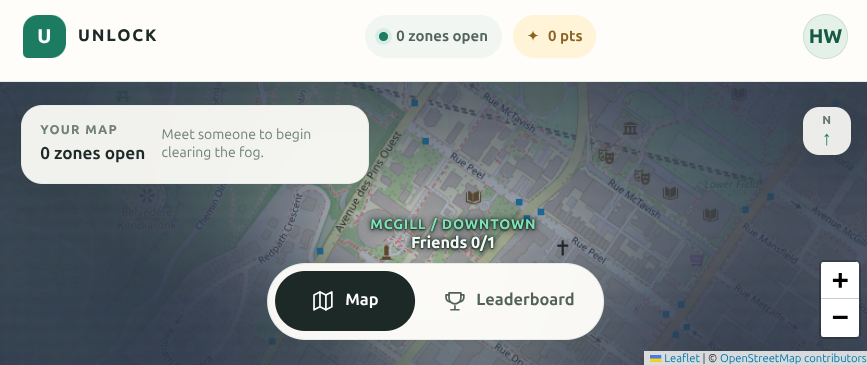

Find a plan that sounds like you.
Explore small campus events and local hangouts hosted by students and clubs.
Find your next thing, meet someone new, and uncover Montreal one good plan at a time.
Low-pressure plans make it easier to show up. The rest happens naturally, one real hello at a time.
Explore small campus events and local hangouts hosted by students and clubs.
Know there’ll be a few familiar interests and friendly faces when you arrive.
Share a quick four-digit code at the event. A simple hello earns you both points.
Meet people, explore new neighborhoods, and watch the city come into view.
Skip the pressure to plan the perfect night. Choose a small thing and come as you are.
Lower Field, McGill
Allez Up, Griffintown
Café Olimpico, Mile End
Montreal starts under a soft fog. Follow event pins, meet other students, and reveal the neighborhoods you explore together.

Find people through the things you already like. Connect at events, in person, on your terms.
“I came for the sketching.
I stayed for the people.”
Find a plan. Show up. See where the city takes you.
Get started →Built for McGill students · Made for real-world connection